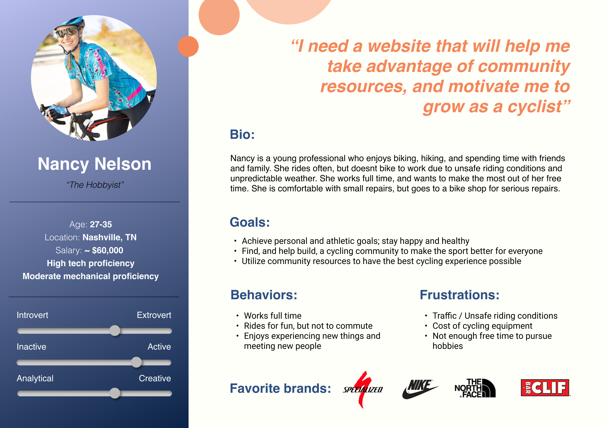
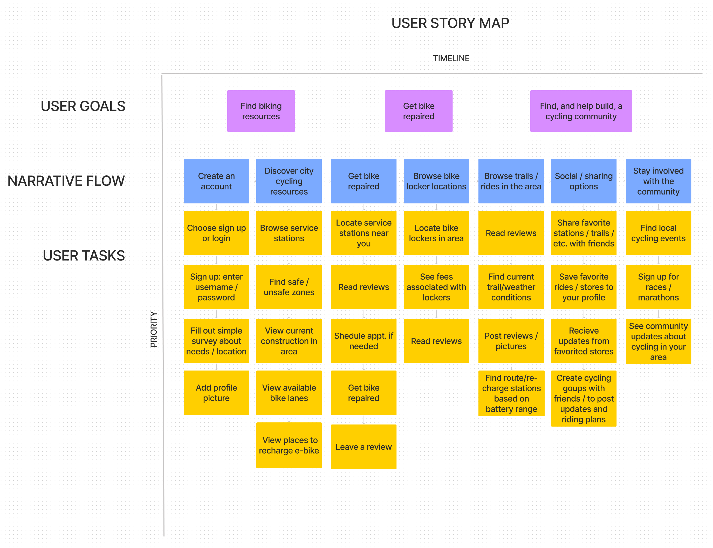
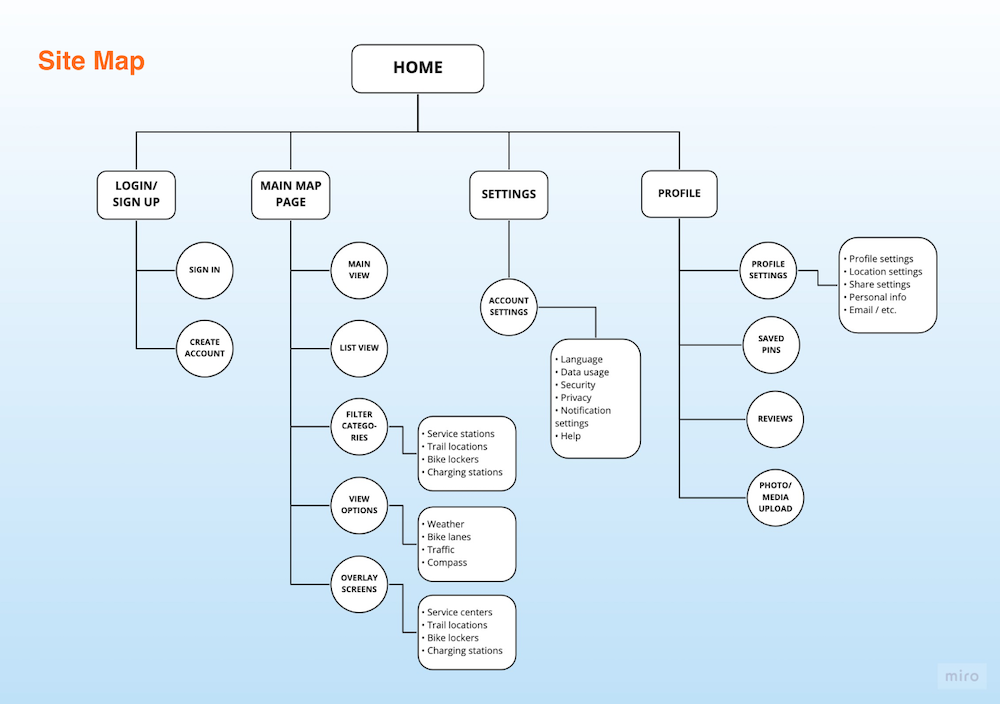
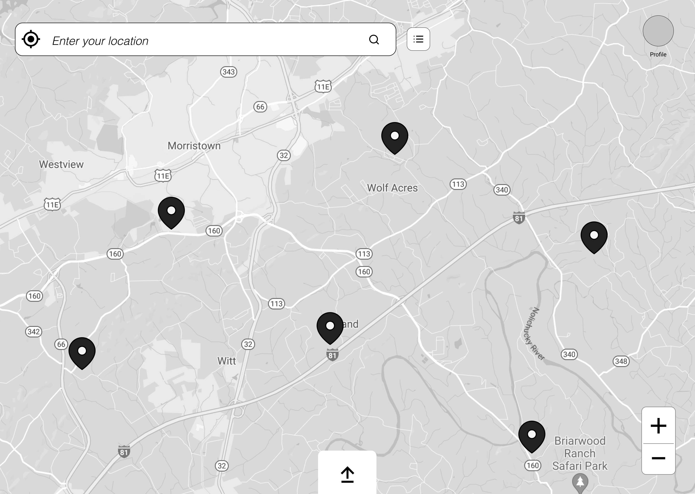
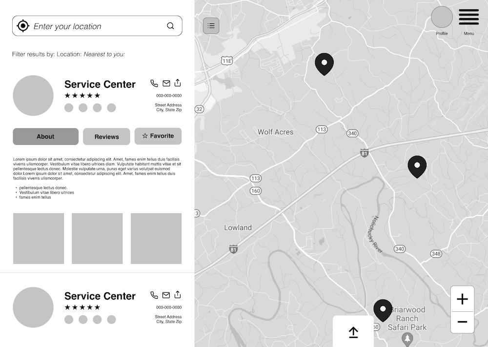
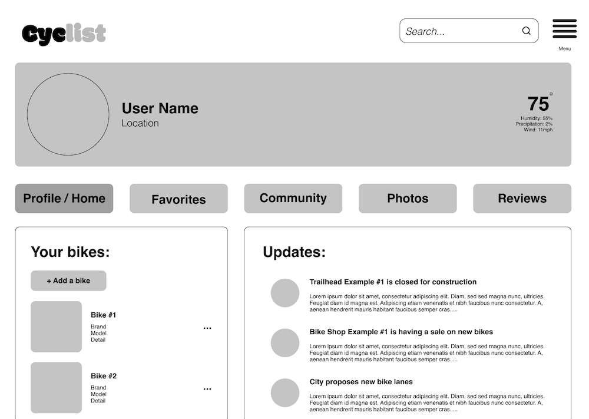

Project Scope:
- My Role: User Research, User Testing, UX Design
- Tools: FigJam, Figma
- Timeline: June - July 2021 (3 weeks)
- Deliverables: Sketches, persona, user story map, wireframes, high fidelity prototype
- Team: Myself, Alexis Ray, Spencer Sayer, Robin Looney
About the project
As part of a community effort to reduce carbon emissions and encourage alternate means of transportation, the city has announced bike servicing areas that will be made available to the public. At these facilities, bicyclists will be able to find stations and tools to repair and maintain their bikes, and experts who can help them by appointment.
The Problem
As good for the environment as bicycling is, there are many barriers potential cyclists face to riding more often. We explored the many concerns and pain points people have when it comes to using bikes.
Our Approach

User Research
The first step in our process was to interview potential users in order to learn more about their concerns. We interviewed a total of 8 people.
Key Takeaways:
- Many of them use apps while biking
- Most are aware of bike service centers and have used them in the past
- Expanded locations and amenities would be nice
- Many expressed concerns about safety
User Quote:
Questionnaire
We created a 16 question survey and shared it over social media. The goal was to learn about our respondents and uncover their mobility needs. We also delved into the needs of e-bike riders, who have particular needs and is an area that has been exploding in the last few years.
Overall picture:
- Respondents owned a variety of different kinds of bikes
- Familiarity with bike servicing and repairs was evenly spread from novice to expert
- Respondents strongly leaned toward using service centers if they were available
{kind=link}
{kind=link}
Opportunities for more investigation:
- Conduct a survey focused on e-bike riders
Define
In order to get a high level view of all the information we gathered, our first step was to create an empathy map and then create a persona.
Empathy Map
{kind=link}
Persona
{kind=link}

User Story Map
{kind=link}

Site Map
And the last step in our definition process was to create a site map. Between the site map and user story map we had all we needed to begin designing.
{kind=link}

Ideate
During the ideation phase we got into working out the design of our app. This involved brainstorming designs by sketching out ideas. Each of our team members shared their sketches and we compared designs. We came to a consensus on the design direction and the features that made the most sense.
Sketching
{kind=link}
Prototype
The first step in the prototyping phase was to create wireframes for all the pages and features, and create a basic low-fidelity prototype for testing. Some of the feedback we received in initial user interviews was incorporated into the designs.
{kind=link}

{kind=link}

{kind=link}

Key takeaways:
- Listen to your users
- Don't always depend on design patterns from popular apps
Testing with users
For usability testing we used the prototype feature in Figma. We created a testing script that included six tasks. Six users took part in the testing.